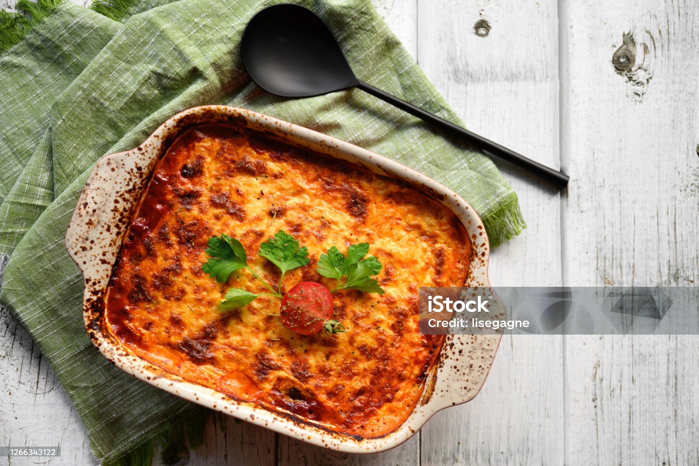

Lasagna
Here goes the description

This is how you make it
- Cut the onion
- Cut the carrots
- Cut the garlic
- Mix them and fry at high heat
- Let is simmer and add the tomato paste
- Add the mince meat
- Put the mix into the layers and right into the oven 180 degrees for 20 minutes!